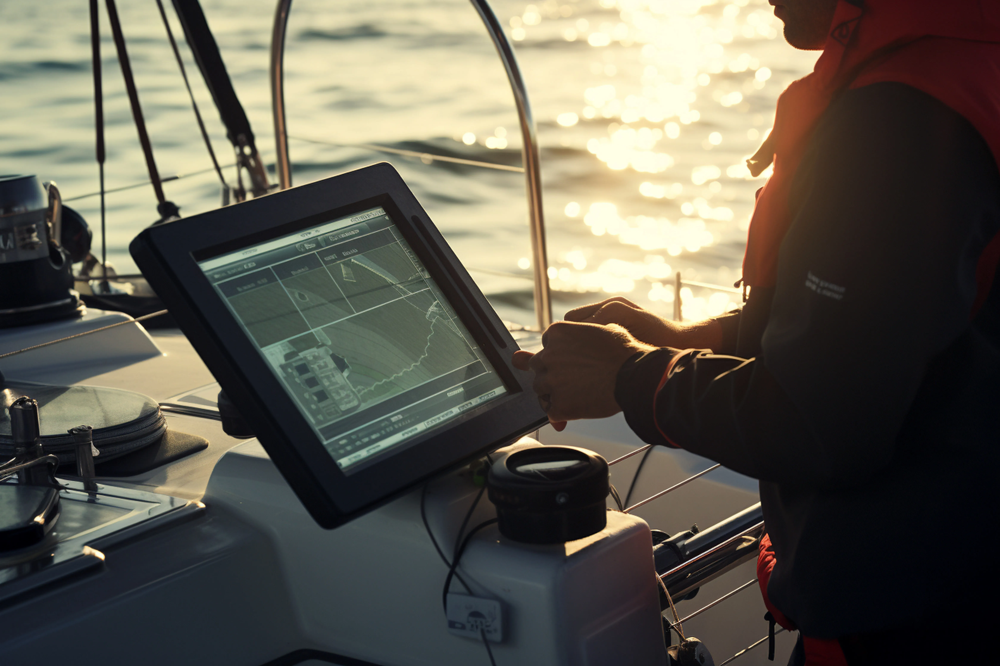
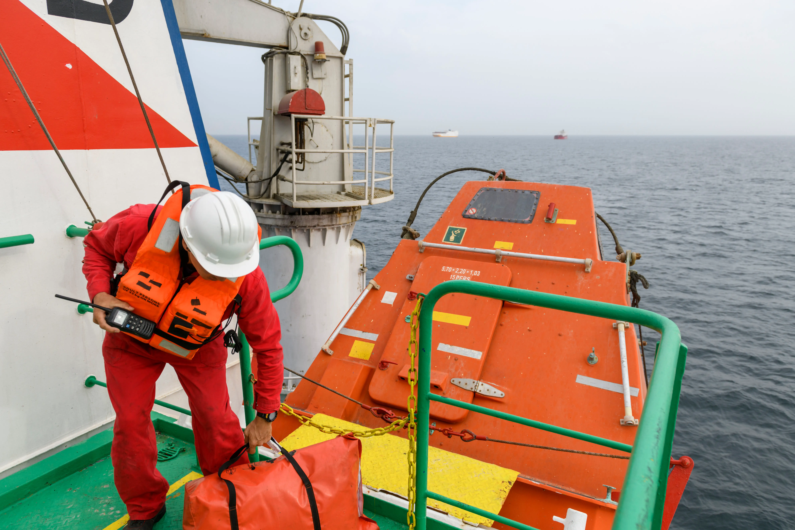
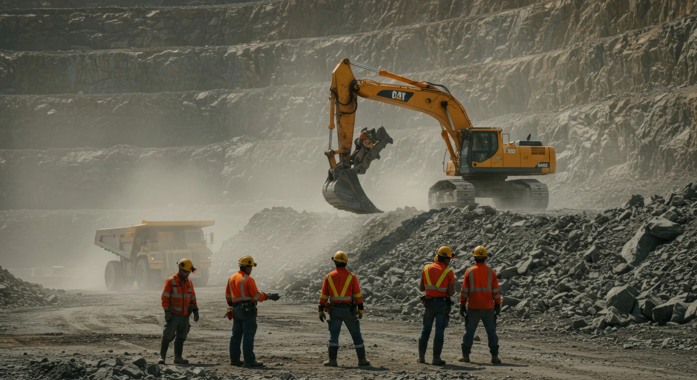
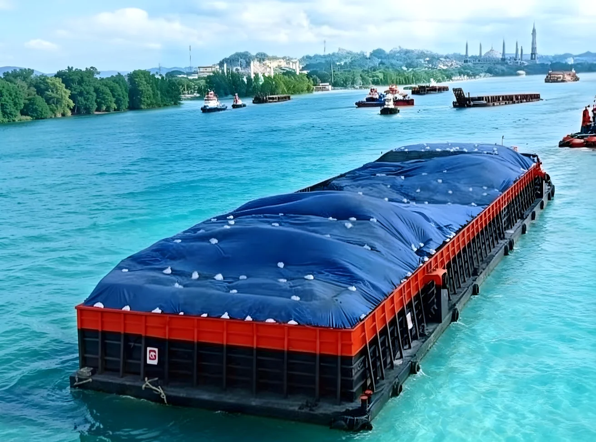
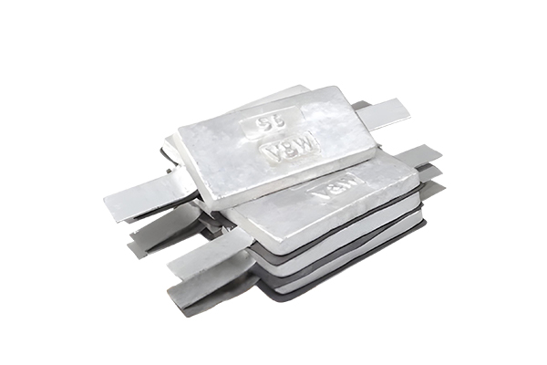

5 Rekomendasi GPS Kapal Terbaik 2026 untuk Nelayan & Kapal Komersial
GPS kapal adalah perangkat navigasi penting yang digunakan untuk menentukan posisi, arah pelayaran, dan meningkatkan keselamatan di laut...
Baca Selengkapnya
Dalam dunia pelayaran, alat keselamatan kapal merupakan komponen vital yang tidak bisa diabaikan. Peralatan ini dirancang untuk melindungi awak kapal dan penumpang dalam situasi darurat seperti kebakaran, kebocoran, kecelakaan, hingga kondisi cuaca ekstrem di laut.

GPS kapal adalah perangkat navigasi penting yang digunakan untuk menentukan posisi, arah pelayaran, dan meningkatkan keselamatan di laut...
Baca Selengkapnya
Morowali dikenal sebagai salah satu pusat industri nikel terbesar di Indonesia. Aktivitas alat berat, proses smelter, dan lingkungan kerja yang padat membuat standar keselamatan harus diterapkan secara ketat.
Baca Selengkapnya
kapal tongkang merupakan perlengkapan penting dalam industri pelayaran dan logistik laut. Terpal digunakan untuk melindungi muatan dari hujan, panas, angin, serta berbagai faktor lingkungan yang dapat mempengaruhi kualitas barang selama proses pengangkutan.
Baca Selengkapnya
Kenali fungsi, cara kerja, jenis, manfaat, serta tips memilih dan mengganti Zinc Anode untuk melindungi kapal dan struktur logam dari korosi.
Baca SelengkapnyaAnda sedang melihat seluruh artikel yang tersedia.